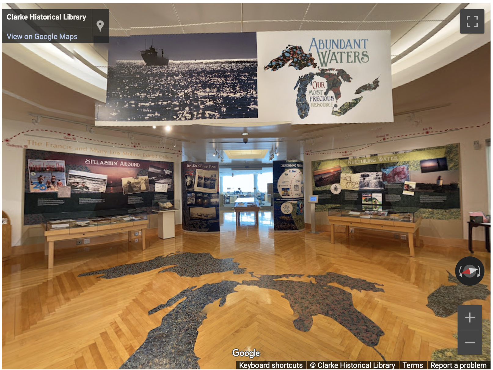

At this point, there is no real distinction between my research, teaching, and service. I see them all as interconnected facets of my academic identity and mission. Through various roles and initiatives, I have sought to leverage my expertise in digital history and cultural heritage to enhance the accessibility and impact of historical knowledge.
I see this endeavor as extending scholarly expertise beyond research and teaching to build infrastructure and expertise outside the classroom, support communities and engage with the public, and strengthen institutions. My service work operates at multiple levels—departmental, campus-wide, disciplinary, and public—all unified by my commitment to making information practices more accessible, equitable, and impactful. My most substantial service contribution has been building and directing LEADR. This administrative experience encompasses budget management, personnel supervision, strategic planning, securing funding, and coalition-building. As one of the leading DH pedagogical labs in the United States, service is an extension of the lab's commitments to access, collaboration, and impact. The same values that orient my research (understanding how information practices shape society) and teaching (making knowledge accessible and exciting to diverse learners) animate my service work.
I have incorporated many of the lessons from my teaching and research experience into my invited talks and workshops across campus and beyond. These events are designed to help graduate students and faculty gain valuable digital skills and mold those skills to their disciplinary needs. Topics have included digital mapping, incorporating digital methods in the classroom, digital presence, and digital publishing. These workshops have resulted in more collaborations within and outwith LEADR, as well as increased visibility for the lab and its mission.
At a disciplinary level, there are a number of avenues in which I contribute to the broader historical profession. Most recently, in September 2025, I was invited to participate in the Taking Stock and Setting Agendas:A Workshop on Data, Digital Humanities, and Early American Studies" a 2-day invite-only workshop at the Institute for Thomas Paine Studies at Iona University, that brought together 19 experts in both early American studies and digital humanities to take stock of the current state of digital scholarship in early American studies and chart a path forward in a special issue for the journal Early American Studies. The workshop focused on four main themes: digital space and place, artifical intelligence, digital publics and digital pedagogy, and data and the digital in early America. As a participant, I joined the conversation surround artificial intelligence and its use and misuse in the field.
I also serve as a member of the American Historical Association's Digital History Working Group. As a member, I contribute to ongoing conversations about establishing best practices for digital historical research, developing standards for peer review of digital scholarship, addressing ethical considerations in digitization and computational analysis, and ensuring that digital methods enhance rather than replace traditional historical rigor. This work involves participating in discussions about how the discipline should approach emerging technologies, what training historians need in digital methods, how to evaluate digital projects for tenure and promotion, and how to make digital history accessible to diverse scholarly and public audiences. Through this working group, I engage with leading digital historians from across the country, contribute to shaping disciplinary standards at a national level, and help ensure that conversations about digital methods in history remain grounded in humanistic values and critical perspectives.
In addition, I serve on the advisory group for the Global Digital Humanities Symposium, contributing to shaping international conversations about digital humanities across diverse geographic and institutional contexts. This work involves helping to identify emerging trends in global digital humanities, ensuring representation of diverse voices and methodological approaches, and fostering dialogue across different national and disciplinary traditions in digital scholarship. Additionally, I serve on the academic advisory group for forgingUS, a $10 million NEH-funded initiative in public-facing digital history. As an academic advisor to this major federal project, I contribute scholarly expertise to ensure that digital public history maintains rigorous standards while reaching broad audiences. This advisory role involves addressing questions about historical interpretation and representation, evaluating methodological approaches, and supporting the integration of cutting-edge academic research with innovative public engagement. Serving as a member of the academic advisory committee to a project of this scale and federal visibility demonstrates my capacity to contribute expertise at the highest levels of digital humanities practice and my ability to help shape major initiatives that advance both scholarship and public understanding. As my career develops, I am committed to expanding my professional service through continued manuscript review, conference organizing, and professional association involvement. I am particularly interested in service that addresses emerging challenges in digital scholarship, supports early-career scholars navigating digital methods and public engagement, and promotes inclusive practices in information studies and digital humanities.
In my home department of history, I serve on the History Department Undergraduate Committee, where I contribute to curriculum development, program assessment, and policy decisions affecting undergraduate education. This committee work has given me experience with shared governance, understanding how undergraduate programs function, and working collaboratively with colleagues on curriculum and student success initiatives. I also serve as honors thesis advisor to undergraduate students, providing intensive mentorship to students conducting original research and producing substantial scholarly work. This advising involves guiding students through the full research process—from developing research questions and identifying sources to conducting analysis and writing a thesis-length manuscript—and represents a significant commitment to undergraduate research mentorship.
Beyond departmental service, I served as the fixed-term faculty representative for the college's DEI Strategic Planning Delegation. In this role, I contributed to developing strategic priorities for diversity, equity, and inclusion initiatives at the college level, representing the perspectives and concerns of fixed-term faculty while helping to shape policies that would affect the entire college community. This experience gave me valuable insight into college-level governance, strategic planning processes, and how to advocate effectively for inclusive practices within institutional structures. It also demonstrated my commitment to ensuring that conversations about diversity and inclusion include voices from across the faculty ranks and employment categories.
I provide digital pedagogy support across campus, working with faculty and graduate instructors in history, anthropology, and integrated humanities and social sciences courses. I also contribute to broader conversations in digital humanities and information studies through event organization and institutional leadership on emerging technologies. In February 2025, I organized Faith, Fear, and Praxis: AI and the Humanities and Social Sciences, a symposium that brought together scholars, practitioners, and students to examine the implications of artificial intelligence for humanistic inquiry and social science research. The symposium's title reflects the complex emotional, theological, and practical dimensions of how our fields engage with AI—moving beyond simplistic narratives of either techno-optimism or luddite rejection to examine nuanced questions about opportunities, risks, ethical implications, and best practices. The event created essential space for disciplinary conversations as these technologies rapidly transform research, teaching, and professional practice. This event addressed urgent questions about how our fields should engage with generative AI.
My work in this area has been recognized at the institutional level through my appointment to the Provost's Planning Committee for MSU's upcoming 2026 AI Summit in May. This university-wide initiative brings together faculty, administrators, and external partners to develop strategic approaches to AI across the institution. This year I will also be organizing a workshop for introducing digital ethics and digital literacy in the classroom as part of Ethics Week 2026. My service to the university also draws on departmental and LEADR goals, during the 10th anniversary of LEADR (2024) I organized a years worth of events specifically orientated toward digital history and digital cultural heritage. This included an opening event, two LEADR-led comprehensive workshops on digital projects in the classroom and techniques for digital mapping, two speaker events (this included Dr. Carrie Heitman from University of Nebraska Lincoln and Drs Walter Hawthorne and Dean Rehberger from MATRIX and MSU's History Department), the year finished out with a guest speaker Dr. Sharon Leon from Digital Scholar.

One of the more exciting opportunities I have been a part of was building the Abundant Waters exhibit and its digital counterpart as part of my postdoctoral fellowship at the Clarke Historical Library. Our project revolved around the fact that in Michigan you are never more than 6 miles from a body of water. Launched in 2022, the digital exhibit is a platform dedicated to Michiganders' relationships with their water resources. The material in the exhibit (both physical and digital) was drawn from the Clarke Historical Library's physical and digital collections, the strengths which lie in the history of Michigan, Central Michigan University, and International Children's Books. For this exhibit, I am diligently worked with members of the CMU community, local residents, and the Saginaw Chippewa Indian Tribe, fostering relationships between these diverse communities to share their perspectives on this common, yet crucial resource. This dynamic culture of collaboration and negotiation—including the designer, library director, the wider community, and myself as curator—helped shape my appreciation for making information accessible to all. Working at the Clarke not only refined and enhanced my skills as a historian, but also allowed me to build and maintain relationships with different colleges and departments within CMU, students, and members of the tribe. These experiences allowed me to think creatively while fostering relationships with diverse groups such as students, parents, mentors, communities, and organizations.